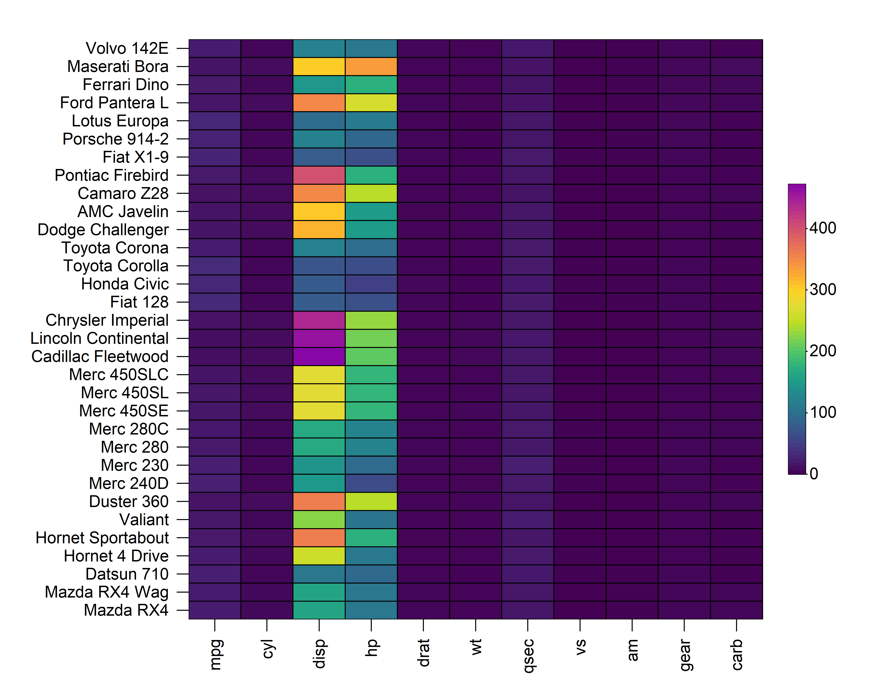
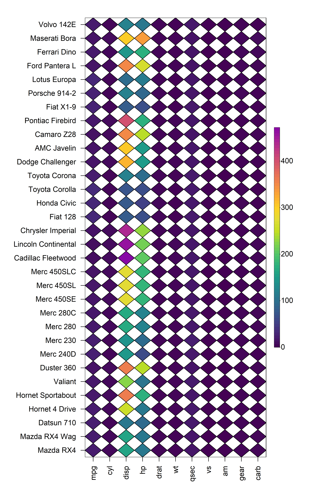
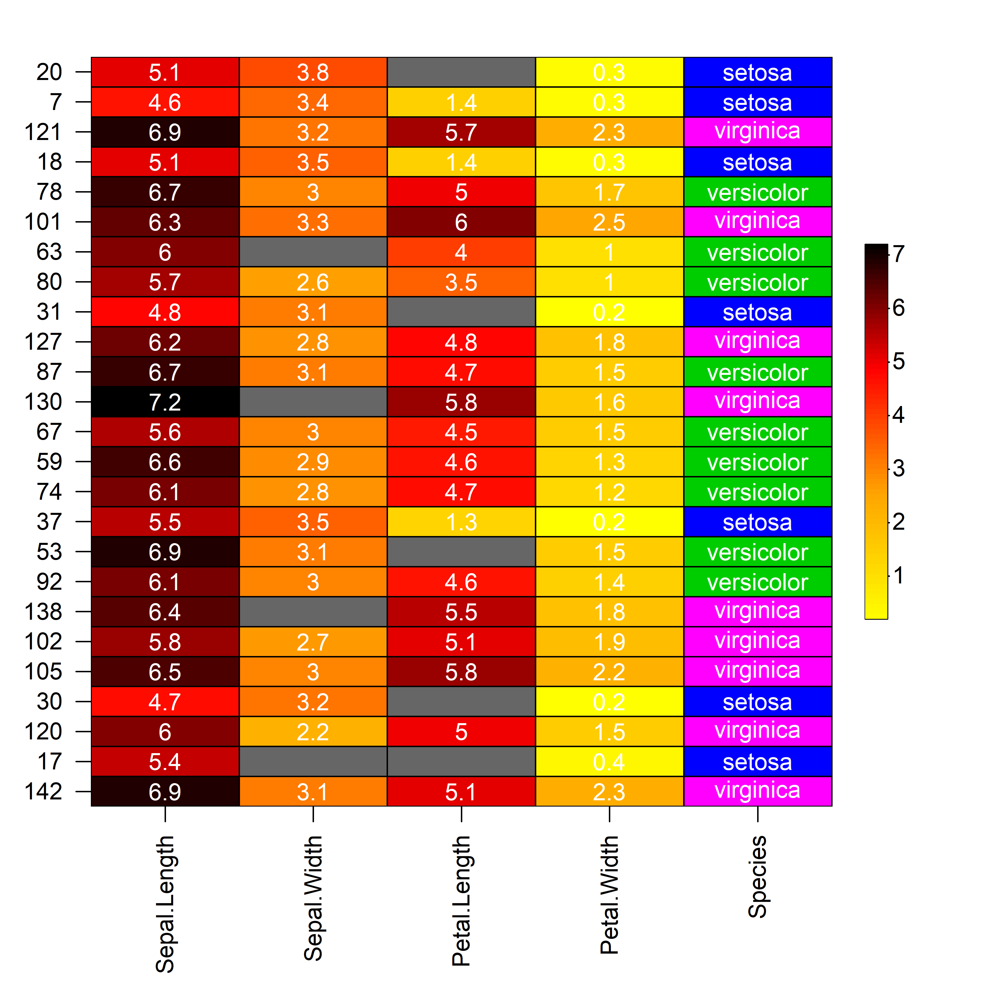
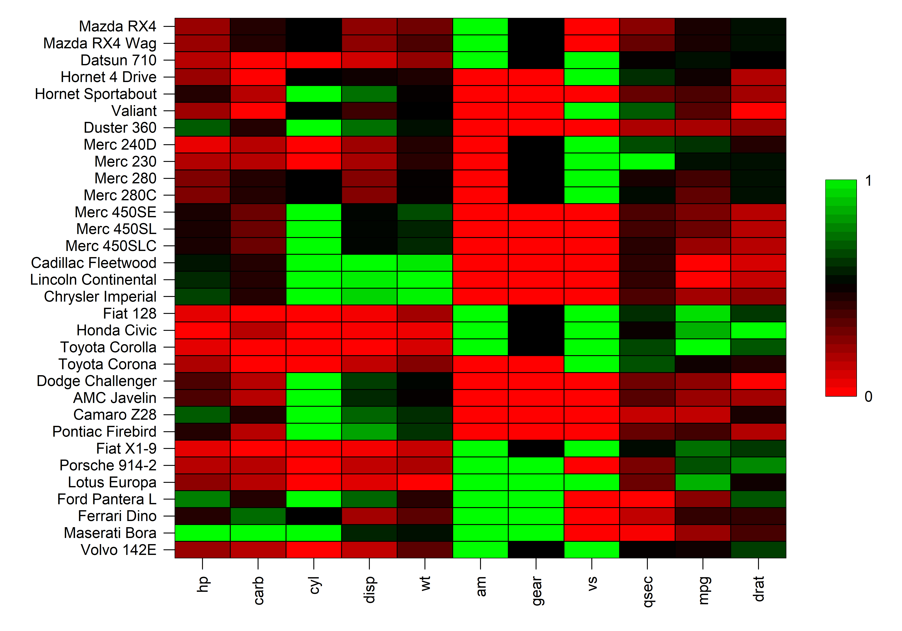
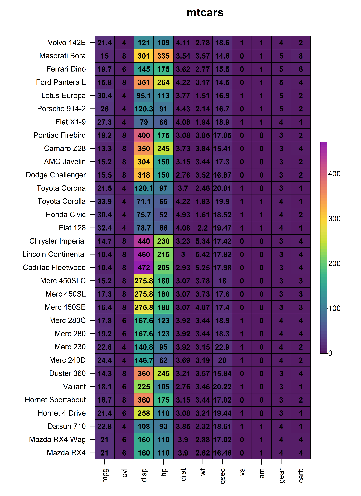
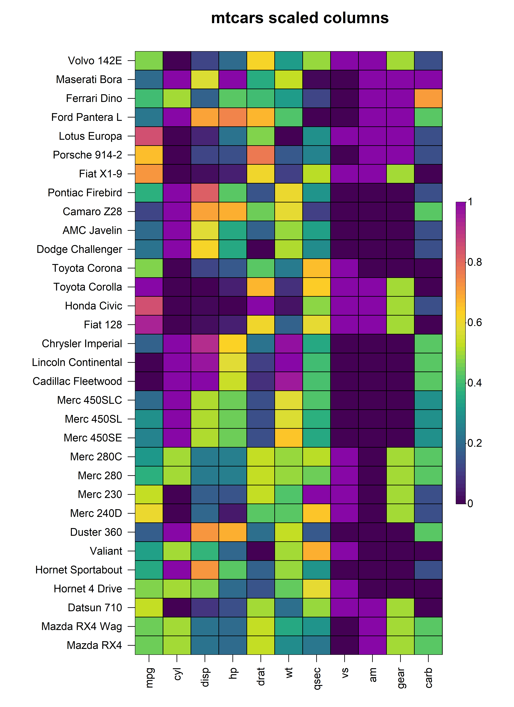
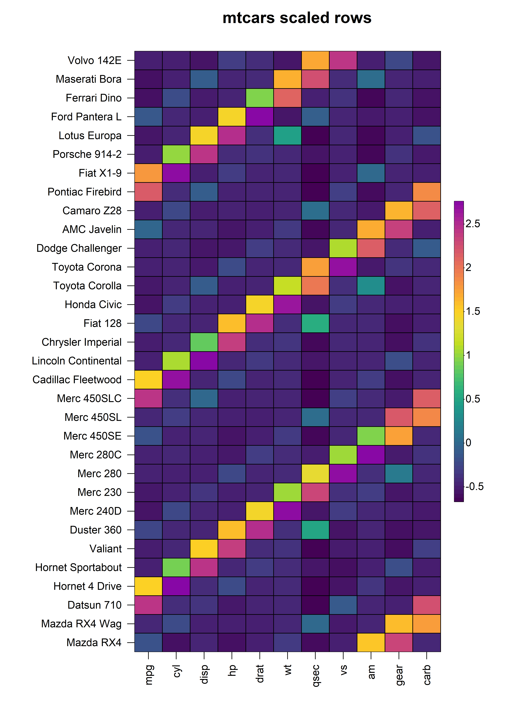
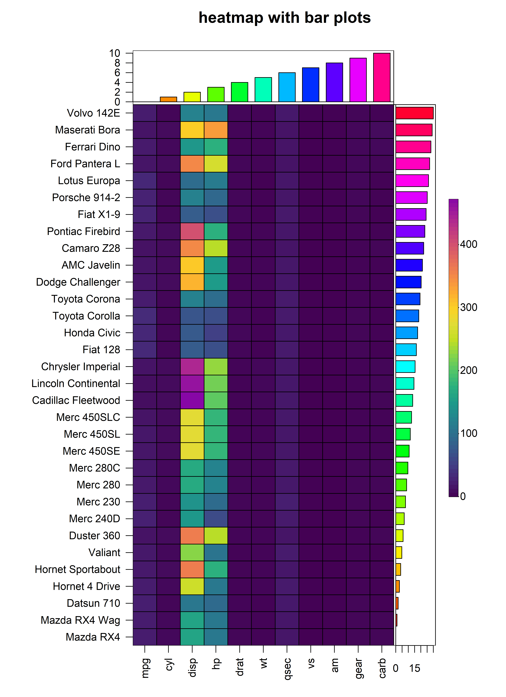

Overview
HeatmapR is a lightweight R package that uses base
graphics to facilitate the creation of high quality complex heatmaps
that can be easily arranged with other plots. In this vignette, we will
explore the key features of HeatmapR and describe the usage
of each of the key functions in HeatmapR as summarised
below:
-
heat_map()convenient wrapper around allHeatmapRfunctions providing an intuitive way to create complex heatmaps using base graphics. -
heat_map_clust()is used insideheat_map()to perform hierarchical clustering on the dataset usingstats::hclust(). -
heat_map_scale()is used insideheat_map()to apply column- or row-wise mean, z-score or range scaling to the dataset prior to constructing the heatmap. -
heat_map_layout()allows you to create custom plot layouts to arrange multiple heatmaps. -
heat_map_save()can be called prior to anyheat_map()call to save a high resolution image. -
heat_map_record()can be called after anyheat_map()calls to record the current plot for saving to an R object. -
heat_map_complete()can be called when creating complex layouts to indicate when the resulting layout should be saved to file usingheat_map_save(). -
heat_map_reset()resets all HeatmapR associated settings in case things are not working as they should.
1. Construct a Basic Heatmap
Constructing a heatmap is as simple loading the
HeatmapR package and supplying your dataset to the
heat_map() function. The constructed heatmap will be in the
same orientation as the input data and each numeric cell in the heatmap
will be coloured using the colour scale supplied to
cell_col_scale. By default, heat_map() uses a
hybrid colour blind friendly viridis palette to offer high
visual contrast.

2. Cell Properties
heat_map() contains a family of cell_
arguments which allow for the customisation of the shape, size, colour,
borders and text of cells within a heatmap. In the examples below, we
will apply the same properties to every cell within the heatmap, but it
is also possible to modify these properties per cell by supplying a
matrix matching the dimensionality and orientation of the input
matrix.
2.1 Cell Shape
heat_map() supports different cell shapes through the
cell_shape argument which can be set to either
"rect" (default), "circle" or
"diamond".
heat_map(
mtcars,
cell_shape = "circle"
)
heat_map(
mtcars,
cell_shape = "diamond"
)
2.2 Cell Size
The size of each cell is controlled through the
cell_size argument. Setting cell_size = TRUE
will scale the size of each cell based on its value in the input matrix.
Alternatively, users can supply a separate matrix of the same
dimensionality and orientation as the input matrix to control the size
of the cells independently of their colour.
heat_map(
mtcars,
cell_shape = "circle",
cell_size = TRUE
)
2.3 Cell Colours
The colour of each cell in the heatmap is dependent on the type of
data in that cell. Cells containing numeric values will be assigned
colours based on the continuous colour scale supplied to
cell_col_scale, whilst cells containing non-numeric values
will be assigned colours from the discrete colour palette supplied to
cell_col_palette. Missing values of the form
NA are also supported and the colour of cells containing
missing values can be controlled through the cell_col_empty
argument. The cell_col_alpha argument accepts values
ranging from zero (transparent) to one (solid) to for fine control over
the transparency of the colour in each cell of the heatmap. In the
example below, we will demonstrate the handling of different data types
within heat_map() using a modified subset of the
iris dataset where additional missing values have been
introduced:
# Modified subset of iris dataset with missing values
iris_sub <- iris[sample(1:nrow(iris), 25), ]
iris_sub[c(2, 19, 14, 7), 2] <- NA
iris_sub[c(4, 9, 17, 25), 3] <- NA
# Build heatmap
heat_map(
iris_sub,
cell_text = TRUE,
cell_col_empty = "grey40",
cell_col_scale = c(
"yellow",
"orange",
"red",
"black"
),
cell_col_palette = c(
"magenta",
"blue",
"green3"
),
cell_col_alpha = 1
)
2.4 Cell Borders
The borders of every cell within the constructed heatmap can also be
customised using the cell_border_line_type,
cell_border_line_width, cell_border_line_col
and cell_border_line_col_alpha arguments.
heat_map(
mtcars,
cell_border_line_type = 3,
cell_border_line_width = 2,
cell_border_line_col = "red",
cell_border_line_col_alpha = 1
)
2.5 Cell Text
The values of every cells within the constructed heatmap can be
displayed by setting cell_text = TRUE. By default, numeric
values are rounded to two decimal places but this can be changed through
the round argument. The text displayed in each cell can
easily be customised using the cell_text_size,
cell_text_font, cell_text_col and
cell_text_col_alpha arguments.
heat_map(
mtcars,
cell_text = TRUE,
cell_text_size = 1,
cell_text_font = 2,
cell_text_col = "black",
cell_text_col_alpha = 1,
title = "mtcars"
)
3. Data Scaling
In the above heatmap, it is very clear that each of the columns of
the input matrix are on completely different scales, making it difficult
to visualise differences in columns with very small values. In order to
represent each column on the same scale, we can apply a form of data
scaling through the scale_method argument either to each
row or column as specified by the scale argument.
Currently, heat_map() has internal support for
"mean", "range" and "z-score"
scaling methods that can be applied to either the rows or columns of the
input matrix.
3.1 Scaling Columns
To scale the values in every column, simply set
scale = "column and specify the scaling method through the
scale_method argument. For example, to apply range scaling
to every column in the mtcars dataset:
heat_map(
mtcars,
scale = "column",
scale_method = "range",
title = "mtcars scaled columns"
)
3.2 Scaling Rows
Similarly, in instances where it is more appropriate to scale the
values in each row, we can set scale = "row" and pass the
required scaling method to scale_method. For example, to
apply z-score scaling to every row in the mtcars
dataset:
heat_map(
mtcars,
scale = "row",
scale_method = "zscore",
title = "mtcars scaled rows"
)
4. Bar Plots
In addition to the cells of the heatmap, heat_map()
supports the display of additional values in bar plots on either axis of
the heatmap. To add bar plots to the heatmap, users should supply the
(named) values to bar_values_x and/or
bar_values_y in the same order as the original input
matrix. The bar plots will be displayed on the opposite side to the axis
text and size of the bar plot (i.e. height or width) can be controlled
through the bar_size_x and bar_size_y
arguments. The colours of the bars and borders can be customised using
the bar_fill_ and bar_line_ family of
arguments. In the example below, we demonstrate the addition of bar
plots to the x and y axes of a heatmap constructed using the
mtcars dataset:
heat_map(
mtcars,
bar_values_x = 1:ncol(mtcars),
bar_size_x = 0.5,
bar_fill_x = rainbor(ncol(mtcars)),
bar_line_col_x = "black",
bar_values_y = 1:nrow(mtcars),
bar_size_y = 0.8,
bar_fill_y = rainbor(ncol(mtcars)),
bar_line_col_y = "black",
title = "heatmap with bar plots"
)